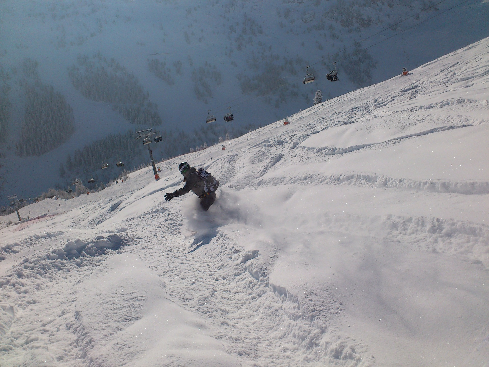
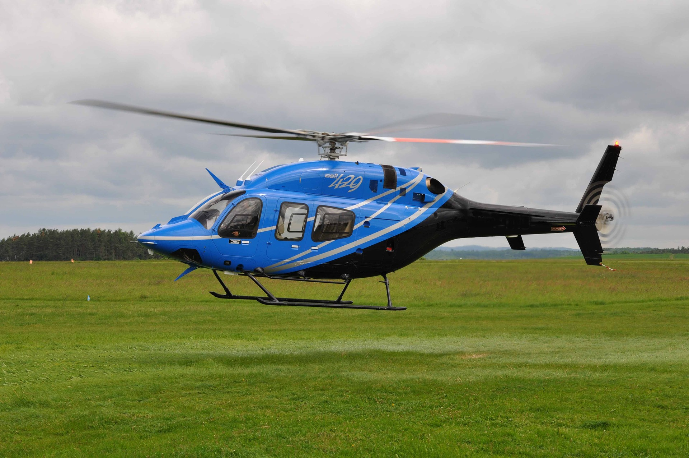
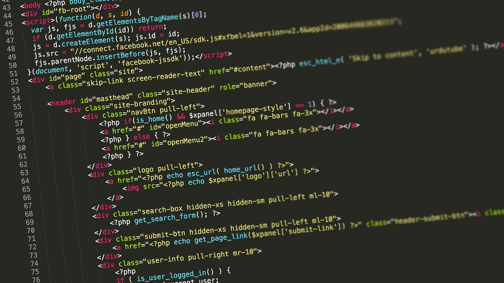

Guitar
I've been playing guitar on and off for about 10 years. I was in a band during college and I still enjoy writing and recording music when I get time. I would like to eventually have my own music studio to create new sounds and record music.

I've been playing guitar on and off for about 10 years. I was in a band during college and I still enjoy writing and recording music when I get time. I would like to eventually have my own music studio to create new sounds and record music.
Although I have not been snowboarding in several years, when I lived close to North Carolina I would go at least 20 times a year. When I move our of Arkansas I plan on locating near snowy mountains again.
I flew helicopters professionally and as a hobby for about 5 years. I was a flight instructor, a tour pilot in the Smoky Mountains, and then I flew for an EMS company for a brief period of time. While I probably will not go back into aviation professionally, I will fly for fun and maybe instruct again in the future.
Coding is my newest hobby. I'm hoping I can become competent enough to work professionally in the programming world. I think it's a skill that will be in demand for a long time and it's something I enjoy and hope to get paid for in the future.
